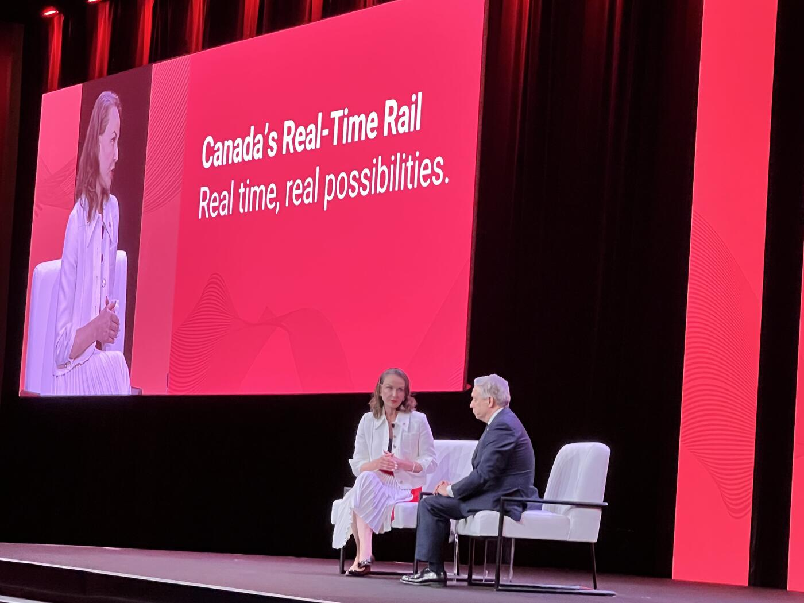
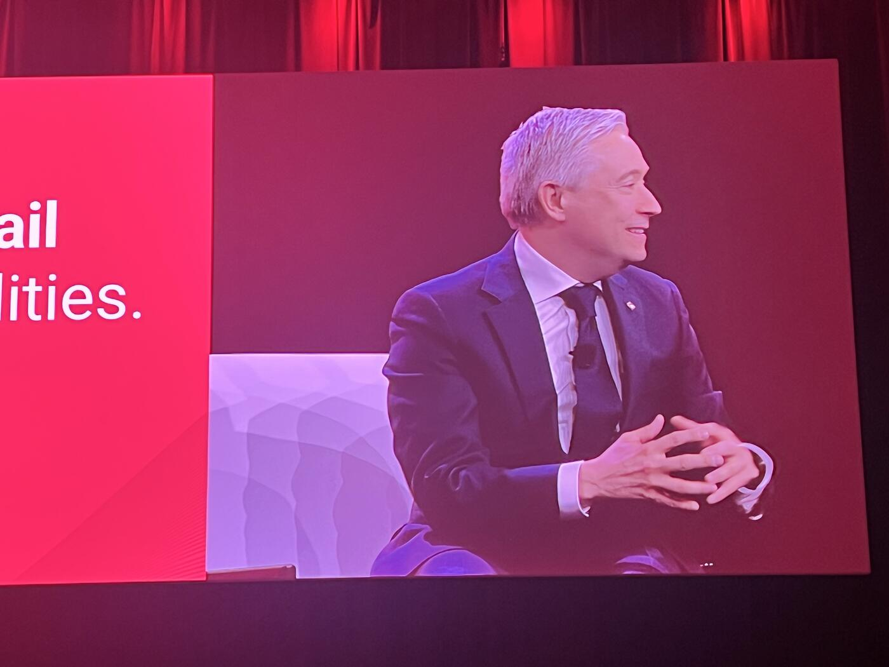
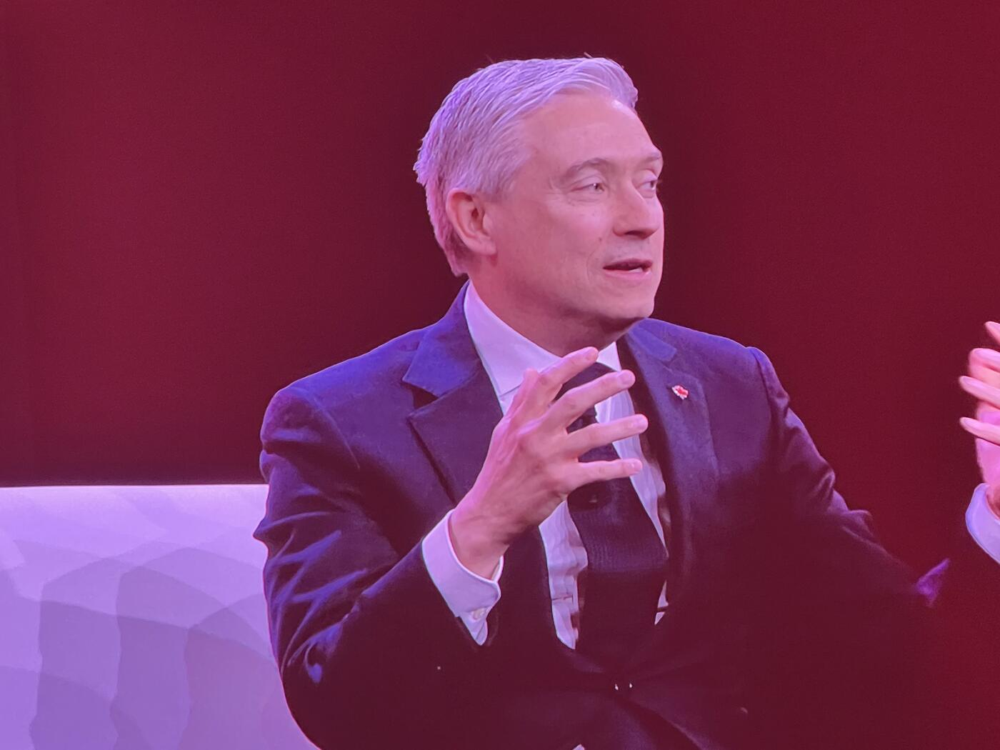
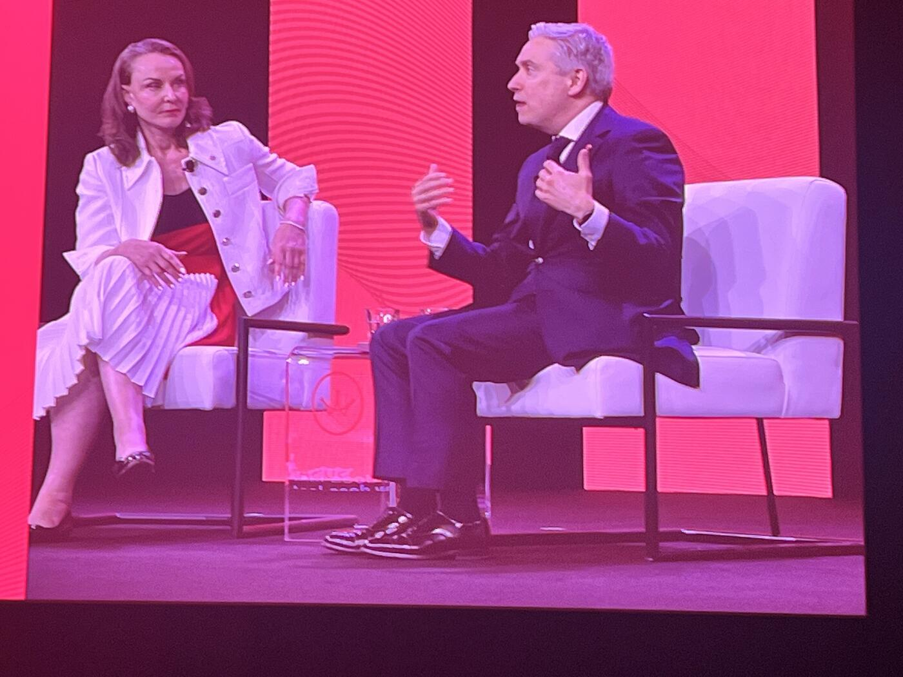

Introduction
At the closing moments of the summit, François-Philippe Champagne was introduced as a central figure in Canada's economic and financial transformation agenda.
The moderator framed the current moment as a defining period for the country's future, emphasizing that the decisions being made today would directly influence both the daily lives of Canadians and the country's long-term competitiveness on the global stage.
"We are in a period of transformation where the choices we make now will shape the everyday lives of Canadians and Canada's competitiveness as well. We have a real opportunity to drive economic growth for years to come."
The remarks pointed to the federal government's recently released Spring Economic Update as evidence of Ottawa's priorities in the current environment, particularly around "safety, security, productivity, and growth."
The audience was then introduced to Minister Champagne, whose background was described as uniquely combining international business experience with public service leadership.
"Before entering politics, Mr. Champagne spent over two decades as an executive and legal counsel for major international organizations" — an experience that helped shape his reputation as "pragmatic and outcome-driven."
The moderator highlighted the range of senior cabinet roles he has held since entering federal politics in 2015, including international trade, foreign affairs, infrastructure and communities, and innovation, science, and industry. The remarks connected Champagne's recent policy work directly to the themes of the summit — the federal budget, the economic update, and Canada's national anti-fraud strategy.
"His tireless, and I do mean tireless, energy and commitment to Canada's economic future make him the ideal partner for today's conversation and our last conversation of the conference."
A World Defined by Volatility

Asked to describe the "North Star" guiding the government's focus, Champagne began by framing the moment as one of historic transformation.
"Great that we'll be building at a speed and scale not seen in a generation. And obviously, this includes our payment system."
To international guests:
"I think Canada is the buzzword these days, I can tell you. At the G7 and the G20 and where we go, people are excited. There's something about Canada that certainly inspires."
He acknowledged that many people are experiencing unease about the pace of global change.
"It's the speed, scope and scale of change."
He pointed to multiple overlapping pressures shaping the global environment, from geopolitics and supply chains to artificial intelligence and cybersecurity, describing a growing public feeling that events are moving beyond people's control.
"If you and I were to go out on the street, probably people would say the wind is blowing quite hard. There's a sense of loss of control in what's happening in the world."
Reflecting on his experience chairing G7 finance ministers during Canada's 2025 presidency:
"I used to say we need to make sure that uncertainty does not become the new certainty."
"Fast forward to 2026, it's really the level of volatility and complexity that we're seeing, which is quite unprecedented."
He referenced tariffs, technological disruption, and Middle East conflict, raising concerns about food security and fertilizer supply chains, before connecting back to Canada's role:
"If you ask me the North Star, we are seen as a country which provides unparalleled opportunity, a very predictable partner, and I would even say a partner of choice."
Trust, he repeatedly emphasized, is the foundation for innovation:
"If people in the street, if we take a walk, and they trust the system, they trust the payment system, they trust the intermediaries in that, they will adopt the technology. And adoption will lead to innovation."
Domestic Priorities: Fiscal Discipline, Affordability, Resilience
Champagne argued that recent fiscal results were important not only economically, but symbolically.
"I think the fact that we delivered on that and show that we have a lower deficit than we projected, I think is giving confidence to people that this is a serious moment, and that there are serious people in the government to make sure that we do the right thing."
He pivoted to affordability:
"If you and I and all of us were walking in the street, there are three things people talk about — housing and affordable homes and the cost of rent. They would talk about the food trucks, and they would talk, obviously, about the price of gas."
"Affordability is probably the biggest challenge we find in all the G7 nations. Canada is not immune to that."
He shared specific allocations:
"We had about $7 billion of additional revenues, and two-thirds of that went back to support people with the grocery benefit, with the housing that we agreed with the province of Ontario."
Champagne then turned to Canada's relative G7 performance:
"Canada is gonna have the second fastest growth in the G7, just after the United States."
"We're growing twice as much as Germany. We're growing twice as much as the UK. We're growing faster than France. We're twice as much as Japan and three times more than Italy."
He highlighted Canada's fiscal standing, citing the IMF:
"They single out Canada and Germany because we're the only two G7 nations with a triple-A credit rating."
"She was saying if you're smart enough to use your fiscal power to invest in housing, infrastructure, innovation, and productivity, you're going to get ahead. Well, look, that's exactly what we're doing in Budget 2025."
He pushed back against narratives that Canada's outperformance is just about oil:
"I've heard some government bankers say this is all about the oil price. No. This is more about the size and the resiliency of Canada and Canadian workers."
He linked payments innovation directly to international ambition:
"You want to connect Canada to the world and the world to Canada."
Financial Crime, Cybersecurity, and the New Financial Crime Agency

The conversation then turned sharply toward financial crime, cybersecurity, fraud, and national security.
"I just want to bring you behind the scenes. When we were chairing the G7, and I brought that, because for me, this is one of the biggest challenges we're seeing not only in our country, because we're not immune."
"There's a transnational nature to that. You may have seen the work out of the extortion, for example. And all that is connected."
"The extortion of seniors being scammed, that's why we need to double down, because I'm really concerned."
"For me, it's economic security, but it also transcends national security."
He announced the creation of a new Financial Crime Agency:
"That's why we're creating the Financial Crime Agency. So we'll have our own version of a serious fraud office for money laundering."
"We need the best brain in policing of the 21st century. So it's not just people with badges. It's people with computers and people who understand the interaction, especially when you think about quantum and AI in the cyber world."
He referenced direct briefings with US partners:
"We had a discussion with Treasury, the FBI, and the Secret Service recently. The next frontier of that is very complex."
"The best way to catch these people is to find the intelligence. You go with intelligence and then you need models. You need smart people."
He confirmed an upcoming policy action:
"We've seen that we're going to be banning crypto ATM."
He drew a clear line between legitimate and illicit use:
"The others who are in the field, which provide legitimate services, there's no issue whatsoever. What I'm concerned is this becoming a vector for financing terrorism and other things."
He referenced reporting in the Toronto Star as a source of his concern, and made a direct ask of the audience:
"All of you who have solutions, expertise, excellence to share, should. Because the more we build trust, the better we're all going to be."
"I want to be best in class, actually. Next time I go to a meeting at the G7, I don't want to be lectured. I want to do the lecturing."
Open Banking, Stablecoins, Real-Time Payments
"It's key for innovation and better services, better prices. I think Canadians are craving for more competition in different sectors."
He named specific initiatives:
"Certainly open banking is one of them. We've passed, we're going to drop down the regulation around stablecoins."
"We want to be best in class. We want Canadians to adopt Canadian solutions."
He referenced India directly:
"I just came from India. I see solutions on the floor to facilitate payments. And I think this is a good thing."
"As Canadians, we're lucky because whenever people look at products coming from Canada, just because it's Canada, there's an element of trust."
"There's an element of trust that we should really nurture as Canadians. People will trust intrinsically Canadian solutions and Canadian innovators."
He cited Estonia and India as nations that "leapfrogged" technology with payments modernization, and connected the Real-Time Rail back to the larger agenda:
"We really need to modernize how we facilitate payments. It's cross-border, it's B2B, B2C."
Canada as an "Innovation Superpower"

"We talked about the energy superpower, about a food producing country, but I think we're also an innovation superpower."
"We're at the forefront of AI. We were the first AI national strategy. We have the first quantum strategy."
The moderator quoted directly from the government's economic statement, describing the Real-Time Rail as "a cornerstone of our modernization agenda that will serve as a powerful engine for national productivity and economic growth," and as "a catalyst for competition, empowering a more dynamic and inclusive financial sector."
Champagne's response:
"This is the best work, because I think beyond the work is the intent and the vision."
"You are really the ones who are going to make that real. You can put it in a statement, but I need each and every one of you in that journey of leadership, that journey of innovation, that journey of trust."
He floated the idea of a digital trade mission:
"We often do these trade missions, which is more on the product side. But what about digital services that we can bring to the world?"
And proposed expanding the Payments Canada Summit itself:
"I really want to bring the world to the payment summit. We should think about how we can really make sure that next time… bringing G7 partners around that and really talk about the opportunity and challenges we have in front of us — making the Payments Canada Summit kind of like the reference point when you're looking at the future."
Closing: Ambition, Confidence, Vision
Closing the conversation on an emotional and optimistic note, Champagne delivered a final message centered on ambition, confidence, and national purpose.
"We need to practice more. That's kind of what I'm saying in a way, you know, ambition with confidence, with vision."
"That really would be these three words."
"We have so much to offer to the world at the critical point in world history that the world is craving for Canada."
"We lead with the strength of our values. We lead with the strength of our innovation. We lead with the strength of our people."
"When I'm in a group like that, you have to feel inspired."
"With your leadership and the leadership of the people I see in this room, I see no challenge too big for us as a nation."
He framed Canada itself as "a lighthouse in many ways," and added:
"I've never been more confident in the future of Canada. And it starts with each and every one of you."
The minister concluded with a direct call for unity and action:
"So let's seize the moment. Let's be ambitious. Let's build Canada strong together."
Key Takeaways

- North Star: Canada as a country of "unparalleled opportunity, a predictable partner, a partner of choice."
- Champagne's framing: "Uncertainty must not become the new certainty" — but 2026 volatility is unprecedented.
- $7B in additional revenues — two-thirds redirected to affordability (grocery benefit, Ontario housing agreement).
- Canada to be second-fastest G7 growth, after the US; growing 2x Germany/UK, 3x Italy.
- Triple-A credit rating — one of only two G7 nations alongside Germany.
- New Financial Crime Agency announced — Canada's "serious fraud office" for money laundering and 21st-century cyber-enabled crime.
- Crypto ATMs will be banned — but legitimate digital asset providers are unaffected.
- Open banking + stablecoin regulation incoming.
- Champagne positions Canada as an "innovation superpower" — citing first AI and first quantum national strategies.
- Real-Time Rail framed as "a cornerstone of our modernization agenda."
- Proposal: expand Payments Canada Summit into a G7-level global forum on payments.
- Closing words: ambition, confidence, vision.